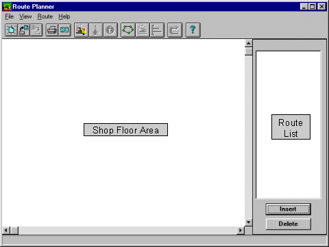
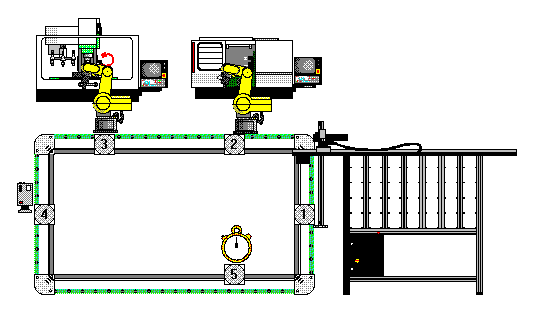
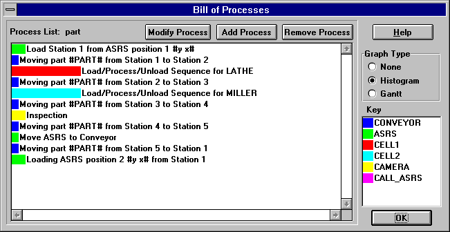
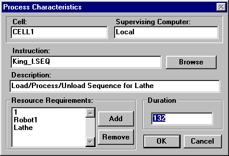

Route Planner
The function of the Route Planner is to fix a component's process plan to a particular shop floor configuration. The shop floor must contain the machine tools necessary to produce the component, together with suitable material handling and storage devices. The user may determine the route for a component around the shop floor, but the Route Planner assists by inferring machine sequences and preventing impossible machine transfers.
Once the route is generated it is time-stamped with the date and time of creation of both the shop floor configuration and the process plan for the component. This prevents any modifications to the component or the shop floor being made without also modifying the route. The route for a component is used in the next step to create a Bill of Processes to control the manufacturing cells.
Usage
The route planner is an application which automatically generates, or allows the user to create, a route for a component around a shop floor. The main interface has a large area which displays the shop floor and a list for the route.

To create a route the user must load a shop floor layout and a process plan by pressing the
Load Process Plan... and Load Shop Floor... menu items or buttons. These buttons present a standard file selection dialogue to let the user choose the two files; the names of the files appear in the status bar at the bottom of the screen.To quickly generate a minimal route for the component based on the process plan, the
Auto-Route button may be pressed. This uses the Transportation Network generated by the Configurator to create the shortest path from the inventory device to each machine in the process plan and then to the storage device. The complete route is shown in the Route list as a sequence of machines; a graphical representation is obtained by pressing the Show Route button. The route is super-imposed onto the shop floor as a graph and the Show Machines button is hi-lighted to change the screen back to normal editing mode.If more flexibility is required, or if the shop floor has devices other than those listed in the process plan which also need to be added to the route, such as vision inspection systems or bar-code readers, there are two alternatives; manually creating a route or modifying an existing route.
To manually create a route, after loading the Shop Floor Layout and the Process Plan, the user may simply press the left mouse button over the machines in the desired sequence. For instance, if the shop floor shown below is used and the component needs to be sent from the AS/RS, to the Lathe, to the Miller, then to the Camera and back to the AS/RS, the user should click the left mouse button over the AS/RS, then on the Lathe, then the Miller, then the Camera and finally on the AS/RS. All transportation devices needed to move the component from machine to machine will automatically be inserted, based upon the transportation network for that shop floor.

When selecting machines in the shop floor window, the Route Planner always checks to see whether intermediate machines are required to allow the component to move to the last selected machine from the machine before it in the Route List. If transportation devices are required, the Route Planner works out the shortest path between machines and automatically generates and inserts the intermediate route.
Once a route has been generated, it can be modified in two ways. The first method is to select a machine in the Route List and press the
Delete button. This removes the machine from the route but does not validate the route; the user must ensure that there is still a path from machine to machine.The second method of modification involves
Insert button. When a machine is selected in the Route List, pressing the Insert button changes the cursor to an upwards pointing arrow when moved over the Shop Floor window. When a machine in the Shop Floor window is clicked, its name is entered into the Route List above the currently selected machine. Only one machine may be inserted at a time; further selections are appended to the end of the route when further machines are selected. Note, again there is no validity checking for the Insert function; the user must ensure that the Route List shows a valid route.When a valid route has been created, pressing the
Processes¼ button creates a sequence of processes to move the component around the shop floor according to the route. The shop floor is defined as a set of cells, each performing a separate function. Each process corresponds to a command sent to a Cell Controller to make it perform a task such as moving a component, unloading a component from stores, or shaping a component.The processes are displayed as a graph of time against process number, with time along the horizontal axis.

Bill of Processes
The Bill of Processes dialogue shows the graph of processes, colour-coded according to the cell which that process is to control. A key of colours and cells is also given. The graph may be shown as a Gantt chart by pressing the
Gantt button in the Graph Type box. The Gantt chart illustrates more clearly the sequence of processes in time, and is used later in the Scheduler.
A process can be modified by selecting it from the list (by clicking the left mouse button over it) and pressing the
Modify Process button at the top of the dialogue, or by double-clicking the left mouse button on the process itself. When a process is modified, another dialogue appears containing all of the information stored for that process. At the top are two entries containing the cell name and the supervising computer. A process has an Instruction which is to be sent to the cell and a Description of that instruction. The instruction must be a valid command for the named cell, otherwise an error will occur when the cell comes to execute that instruction. The description is for documentation purposes only, so it may contain anything which is meaningful to the user.To execute a process, the cell controller must have complete control of a number of machines. Each machine to be used during the execution of a process is listed in the
Resource Requirements box. This list of resources, held for each process, allows the Scheduler to arrange the processes in time without overlapping two processes which require control of the same machine. If two processes overlap causing a machine capacity overload, one process will be rescheduled.A process has an estimated duration which, in the case of machine tools, is taken from the process plan for the component in question. For other devices the time is a pure estimate and should be altered based on timings taken from the real hardware.
Bill of Processes – Macros
When a Bill of Processes is generated not all the information needed to create machine instructions (or sequence names) is available. Sequence names have to be input by the user because they are originally created by the user but some machine instructions are automatically generated.
If a machine instruction needs to reference a unique identification number for a component – for example, a conveyor must given a part number for it to carry out a command – a macro can be used in the sequence name. A macro is prefixed and suffixed by the ‘#’ character and is substituted for a numeric value by the scheduler when a schedule is created. In the example above, the command to move a pallet containing a ‘king’ component from station 1 to station 2 on a palletised conveyor is, ‘3 king 1 2 #PART# ’. The first digit is a command number which is sent to the conveyor device driver, the remainder is a set of parameters for that command. The first is the component’s name, then its location, its destination and then the macro #PART#. This is substituted to a pallet identification number by the scheduler, namely a positive number starting at 101.
Another macro is used to describe a component’s storage location on an AS/RS. The AS/RS needs an (x, y) position for a pallet when told to either take or replace a pallet from the storage bays. This cannot be known when the Bill of Processes is generated so the ‘#y x# ’ macro is used in its place. When the schedule is generated the scheduler queries an inventory database to retrieve the actual y and x positions for a specified component.
Route Planner Controls
The File Menu
New
– Resets the Route planner to its initial state. The shop floor, process plan and current route are discarded.Load
– Loads a Route from disk and automatically recalls the corresponding Bill of Processes.Load Process Plan
– Presents the user with a file selection dialogue box to choose a Process Plan.Load Shop Floor
– Presents the user with a file selection dialogue box to choose a Shop Floor Layout.Save
– Saves the Route and Bill of Processes to disk with .rut and .bop extensions respectively.Exit
– Prompts to save any un-saved data and closes the Route Planner application.
The View Menu
Graph
– Graphically displays the route as a set of connected nodes super-imposed on the Shop Floor area.Machines
– Returns the Route planner to standard edit mode after viewing the route as a graph.Bill of Processes...
– If a Bill of Processes has not already been created, creates one and displays it in the Bill of Processes Dialogue (see later).
The Route Menu
Auto Route
– Uses the transportation network for chosen Shop Floor to automatically create a route for the component.Information
– Displays the currently loaded shop floor layout, process plan together with their creation times.
The Main Screen
Delete
– When an item in the Route List is selected, removes it from the list.Insert
– When an item in the Route List is selected, allows the user to choose a machine from the Shop Floor area to insert above the selected item.
The Bill of Processes
Modify Process
– When a process has been selected from the Process List, shows Process Characteristics dialogue box. (see later)Add Process
– with a process selected, allows the user to insert a new process after it. A dialogue appears, asking which cell the process is to command, and the Process Characteristics box is displayed for editing.Remove Process
– Removes the currently selected process from the Process List.Graph Type
– Changes the Process List to either a Gantt chart, a Histogram or a simple colour key of cells and processes.OK
– Updates the Bill of Processes for this component and closes the dialogue.
The Process Characteristics Dialogue
Cell
– The name of the cell to be controlled. Note the name can only be edited in the Configurator.Supervising Computer
– The PC where this Cell Manager is running. To edit the Supervising Computer, use the Configurator.Instruction
– The command to be sent to the Cell Manager to execute this process.Description
– A textual description of the instruction.Add
– Adds another machine to the Resource Requirements list.Remove
– Removes the currently selected machine from the Resource Requirements list.Duration
– The estimated duration of this process, which may be altered and viewed as seconds or minutes by pressing the appropriate button.Cancel
– Disregards any changes to the process and closes the Process Characteristics box.OK
– Updates the selected process and closes the Process Characteristics box.